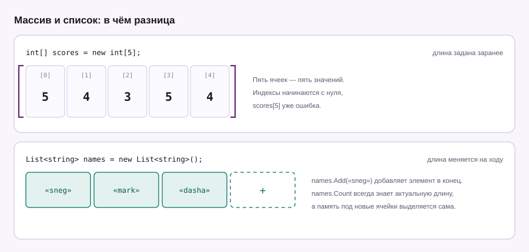

Урок 04 · 20 минут · данные
Массивы и списки
Хранить пять оценок в пяти переменных можно, сто — уже нет. Для этого есть массивы и списки: одна переменная, внутри много значений.
Массив
Массив создаётся с фиксированной длиной и дальше не растёт. Индексы начинаются с нуля: первый элемент — это [0].
int[] scores = new int[5]; // пять ячеек, пока все нули
scores[0] = 5;
scores[1] = 4;
scores[2] = 3;
scores[3] = 5;
scores[4] = 4;
Console.WriteLine(scores.Length); // 5
Console.WriteLine(scores[0]); // 5
Console.WriteLine(scores[4]); // 4
// короткая запись с готовыми значениями
int[] marks = { 5, 4, 3, 5, 4 };
string[] players = { "sneg", "mark", "dasha" };
4. Обращение к scores[5] выбросит IndexOutOfRangeException и остановит программу. Компилятор такое не поймает: он не знает, какой индекс ты посчитаешь в рантайме.
Проход по массиву
Классический сценарий: пройтись по всем элементам и что-то посчитать.
int[] marks = { 5, 4, 3, 5, 4 };
int total = 0;
foreach (int m in marks)
{
total += m;
}
double avg = (double)total / marks.Length;
Console.WriteLine($"Сумма: {total}, средний балл: {avg:F2}");
// Сумма: 21, средний балл: 4,20Приведение (double) обязательно: без него C# поделит целое на целое и отбросит дробную часть, получив 4 вместо 4.2. {avg:F2} оставляет два знака после запятой.
Список: List<T>
Список — тот же массив, но с кнопкой «добавить». Длина меняется на ходу, а память выделяется автоматически. В угловых скобках указывается тип элементов.
List<string> names = new List<string>();
names.Add("sneg");
names.Add("mark");
names.Add("dasha");
Console.WriteLine(names.Count); // 3 — не Length, а Count
names.Remove("mark");
Console.WriteLine(names.Count); // 2
Console.WriteLine(names.Contains("sneg")); // True
names.Sort();
foreach (string n in names)
{
Console.WriteLine(n); // dasha, sneg
}Массив int[] | Список List<int> | |
|---|---|---|
| Длина | фиксированная, задаётся при создании | меняется сама |
| Добавить элемент | нельзя без пересоздания | Add() |
| Размер | Length | Count |
| Скорость | чуть быстрее | чуть медленнее |
| Когда брать | данные известны и не меняются | почти всегда |
List. Массив оставь для случаев, когда количество элементов известно заранее и меняться не будет.
Пара строк вместо цикла
С using System.Linq; появляются готовые операции над коллекциями — считать сумму вручную уже не нужно.
using System.Linq;
int[] marks = { 5, 4, 3, 5, 4 };
Console.WriteLine(marks.Sum()); // 21
Console.WriteLine(marks.Average()); // 4.2
Console.WriteLine(marks.Max()); // 5
Console.WriteLine(marks.Count(m => m >= 5)); // 2 — сколько пятёрокint[] scores = new int[5];. Что произойдёт при обращении к scores[5]?Есть массив оценок { 5, 4, 3, 5, 4, 2, 5 }. Выведи средний балл и количество пятёрок. Сделай это двумя способами: обычным циклом и через LINQ.
Показать решение
int[] marks = { 5, 4, 3, 5, 4, 2, 5 };
int sum = 0;
int fives = 0;
foreach (int m in marks)
{
sum += m;
if (m == 5) fives++;
}
Console.WriteLine($"Средний балл: {(double)sum / marks.Length:F2}");
Console.WriteLine($"Пятёрок: {fives}");using System.Linq;
int[] marks = { 5, 4, 3, 5, 4, 2, 5 };
Console.WriteLine($"Средний балл: {marks.Average():F2}");
Console.WriteLine($"Пятёрок: {marks.Count(m => m == 5)}");